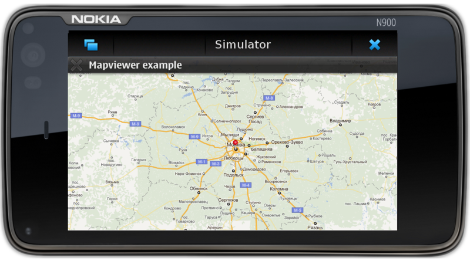
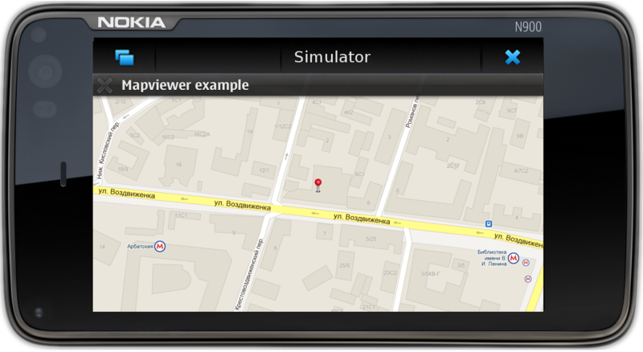

Внимание! Данная статья написана в 2011 году. Многие сведения в ней устарели, а объекты Qt сильно изменились.
В статье освещены основные моменты при разработке картографических и геолокационных мобильных приложений с использованием QtQuick/QML. Рассматриваемый в статье пример поможет вникнуть в суть и основы использования API модуля Location из QtMobility.
В конце статьи читателю станет понятно, как мало кода необходимо для реализации базового функционала картографического приложения, такого как отображение карты, перемещение и изменение масштаба карты, так называемым, “щипком”. Для этого жеста воспользуемся элементом PinchArea, который был представлен в Qt Quick 1.1. Так же для изменения масштаба могут использоваться клавиши увеличения/уменьшения громкости.
Плюс я поведаю что нужно сделать, для использования карт не только от Nokia, но и от Google и OpenStreetMap. Для доступа к дополнительным картам необходимо собрать проект с плагинами для Qt. Для отображения карт необходимо подключение к интернету, но тайлы загружаются один раз и затем запросы кешируются во временной папке. Расположение и размер кеша настраиваемые.
Описание сборки проекта и плагинов основывается на утверждении, что у читателя установлен QtSDK последней версии и прописаны все системные пути к библиотекам (и умение всем этим пользоваться, конечно же).
Дополнительные плагины
Для использования карт от Google и OpenStreetMap необходимо скачать проект с плагинами, либо в виде архива, либо клонировать репозиторий с gitorius.
Для сборки я использовал QtCreator, поэтому буду описывать сборку на основе имеющегося опыта.
При открытии проекта в QtCreator он предложит настроить конфигурацию сборки, выбираете «Эмулятор Qt» и нажимаете Ctrl+B.
Когда сборка завершиться, создайте отдельную папку и назовите ее /geoservices, и положите в нее получившиеся библиотеки. Для того чтобы Qt искала наши плагины в этой папке, нужно либо положить эту папку рядом с исполняемым файлом приложения, либо добавить путь для поиска вызвав QApplication::addLibraryPath() в функции main. Всё, расширения готовы к использованию, можно переходить к нашему приложению.
Картографическое приложение
Итак, приступим, наконец-то, к созиданию. Для создания приложения можно воспользоваться стандартным Qt Quick шаблоном предоставленным в QtCreator. Все изменения будут происходить в main.qml, открываем этот файл, удаляем всё что было добавлено и приступаем к написанию картографического приложения.
Сначала конечно же нужно подключить необходимые модули:
import QtQuick 1.1
//необходимые элементы для работы с картами
import QtMobility.location 1.2
Для отображения карт в модуле Location есть такой прекрасный элемент как Map, ему нужно установить плагин с именем отображаемой карты и установить фокус:
Map {
id: map
z : 1
//для того чтобы доходили события от клавиатуры
focus : true
//по умолчанию плагин поддерживает только карты "nokia",
//но мы расширили поддержку карт (не так ли ;-) )
//и теперь у нас есть выбор из: "nokia" "google" "openstreetmap"
//по-умолчанию буду использовать карты "nokia", вдруг кому стало лень собирать дополнительные провайдеры
plugin : Plugin { name : "nokia" }
//...
}
В принципе, вы уже можете испытать приложение, оно правда не умеет реагировать на события, но для отображения карты больше ничего не нужно. Конечно же, мы не остановимся и продолжим расширять функционал. Итак, пусть карта показывает нам нашу всеми любимую столицу и для этого зададим карте центр и масштаб.
//...
zoomLevel: 7
center: Coordinate {
latitude: 55.7545
longitude: 37.6268
}
//...
Теперь можно добавить функционал для реагирования на действия пользователя.
Начнем с реализации щипка.
//...
PinchArea {
id: pincharea
property double oldZoom
anchors.fill: parent
function calcZoomDelta(zoom, percent) {
return zoom + Math.log(percent)/Math.log(2)
}
onPinchStarted: {
oldZoom = map.zoomLevel
}
onPinchUpdated: {
map.zoomLevel = calcZoomDelta(oldZoom, pinch.scale)
}
onPinchFinished: {
map.zoomLevel = calcZoomDelta(oldZoom, pinch.scale)
}
}
//...
Вся реализация такого функционала заняла 22 строчки кода, не плохо, не правда ли?
Итак, осталось реализовать перемещение карты и добавить изменение масштаба клавишами.
//...
Keys.onPressed: {
switch (event.key)
{
case Qt.Key_VolumeUp:
case Qt.Key_Plus: map.zoomLevel += 1; break;
case Qt.Key_VolumeDown:
case Qt.Key_Minus: map.zoomLevel -= 1; break;
}
}
MapMouseArea {
property int lastX : -1
property int lastY : -1
onPressed : {
lastX = mouse.x
lastY = mouse.y
}
onReleased : {
lastX = -1
lastY = -1
}
onPositionChanged: {
if (mouse.button == Qt.LeftButton) {
if ((lastX != -1) && (lastY != -1)) {
var dx = mouse.x - lastX
var dy = mouse.y - lastY
map.pan(-dx, -dy)
}
lastX = mouse.x
lastY = mouse.y
}
}
onDoubleClicked: {
map.center = mouse.coordinate
map.zoomLevel += 1
lastX = -1
lastY = -1
}
}
//...
И для того чтобы карта не была совсем скучной, добавим булавку в стиле Google.
//...
MapImage {
id: baloon
//заметьте MapImage сам скачает картинку
source: "http://habrastorage.org/storage1/b80bea34/0e0bc0f1/2cc13b01/8b462d5a.png"
offset.x: -12
offset.y: -24
//расположим булавку по адресу офиса Nokia
coordinate : Coordinate {
latitude: 55.752949
longitude: 37.606292
}
//добавим интерактивности
//при нажатии на булавку происходит масштабирование карты
//и булавка располагается в центре карты
MapMouseArea {
anchors.fill: parent
//а вот тут можно применить всю силу анимации
//для анимированного перемещения и масштабирования карты
onClicked: {
map.center = baloon.coordinate
map.zoomLevel = map.maximumZoomLevel
}
}
}
}
Результат получившегося приложения, можно наблюдать на скриншотах:


Заключение
Итак, с минимальными усилиями мы получили рабочее картографическое приложение, количество кода так же минимально. В итоге мы получили элемент который можно встраивать в любое приложение, где нужно показать например какую-то информацию об адресе офиса или магазина, можно отобразить путь от метро до офиса, да и просто отобразить карту. Примеров использования, конечно же, масса. Плюс, на примере исходников к дополнительным плагинам можно реализовать работу с любыми картографическими сервисами, которые поддерживают работу с тайлами (Bing как пример). Для размещения на карте различных элементов, присутствуют такие как:
Все элементы и события мыши работают в координатах карты, что избавляет программиста от конвертации и облегчает работу с элементами. Например, у MapCircle есть такое свойство как radius, оно хранит значение в метрах и при изменении масштаба карты круг либо увеличивается, либо уменьшается.
Ссылки